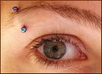

Инфекционный эндокардит (ИЭ) обычно развивается у людей с изменёнными клапанами сердца при попадании на них бактерий, что возможно при травмах, а также при проведении таких потенциально опасных процедур, как пирсинг. Возросшая под влиянием моды, особенно среди молодёжи, популярность пирсинга привела к росту случаев ИЭ, непосредственно связанных с данной процедурой. В данной статье рассматривается этиология подобных случаев ИЭ, обсуждается роль антибиотикопрофилактики и осведомлённости пациентов из группы риска об опасности развития заболевания.
Несмотря на появление молекулярных методов исследования, диагностика инфекционного эндокардита (ИЭ) затруднена, а летальность остаётся высокой (21-35%). Заболеваемость продолжает нарастать, достигая 3,3 случаев на 100000 населения в год в Великобритании и США и 1,4-4,0 на 100000 в целом по Европе. Причинами этого являются увеличение продолжительности жизни пациентов с дегенеративными заболеваниями сердца, более частое применение антибиотиков, увеличение распространённости протезированных клапанов сердца, рост распространённости врождённых пороков сердца среди маленьких детей и пороков митрального клапана, достижения консервативного и оперативного лечения, увеличение числа наркоманов и более точная диагностика. Мужчины болеют чаще женщин, в основном болеют люди 50-60 лет. Спектр возбудителей довольно широк.

Пирсинг, или продевание драгоценностей через отверстия в бровях, ушных раковинах, губах, языке, носу, пупке, сосках или гениталиях, получает всё большее распространение в развитых странах. Исследование среди студентов в Нью-Йорке в 2002 г. показало, что 42% мужчин и 60% женщин прибегали к процедуре пирсинга.
Пирсинг может приводить к нарушению речи, повреждению подкожных структур, но наиболее частым осложнением является локальный воспалительный процесс.
Случаи инфекционного эндокардита, ассоциированные с пирсингом, редки в целом в популяции, но среди лиц с сопутствующей сердечной патологией встречается гораздо чаще. Увеличение частоты подобных случаев наблюдается в последнее десятилетие. В период 1991-1999 гг. было зарегистрировано 3 случая, а за последние 2 года - 5 случаев. У большинства пациентов имели место сопутствующая патология со стороны сердца. У этих пациентов наиболее часто был проколот язык, реже ухо, нос, пупок или сосок. Средний возраст составлял 20 лет, мужчины и женщины болели одинаково часто. Заболевание, в основном, начиналось примерно через месяц после процедуры пирсинга. Возбудителями явились S.aureus, S.epidermidis (62,5%), Neisseria spp., Haemophilus spp. и Streptococcus spp. Адекватная антибиотикотерапия привела к выздоровлению всех пациентов.
Увеличение распространённости врождённых пороков сердца в сочетании с ростом популярности пирсинга среди детей и молодежи может привести к значительно большему количеству случаев инфекционного эндокардита среди детей из групп риска. Нужно также учитывать, что осведомлённость родителей довольно низка: только 29% родителей знают, в каких случаях необходима антибиотикопрофилактика.
Антибиотики рекомендуются некоторыми национальными рекомендациями для профилактики инфекционного эндокардита, но до настоящего времени ни в одних рекомендациях не описана необходимость антибиотикопрофилактики при процедуре пирсинга у пациентов из группы риска. Эта процедура должна рассматриваться как потенциально опасная в отношении заболевания ИЭ по следующим причинам: инвазивность процедуры, в месте прокола может находиться вызывающие ИЭ микроорганизмы (S.aureus на слизистых, зеленящие стрептококки в полости рта), длительное заживление после наносимой травмы (для заживления на языке - 6 недель, на соске - 1 год), процедуру выполняют неподготовленные в медицинском отношении лица и в ненадлежащих санитарных условиях, формирование биопленок на продетых украшениях и затруднение соблюдения гигиены в местах прокола.
И хотя доказательств эффективности антибиотиков для профилактики ИЭ, ассоциированного с пирсингом, нет, исследованиями показано, что 28% врачей в Японии и 61% врачей в США рекомендуют антибиотикопрофилактику при пирсинге. Точка зрения такова: инфекционный эндокардит - тяжёлое заболевание, а поэтому проще дать 1 дозу недорогого антибиотика в качестве профилактики, пока не будут получены надёжные данные об эффективности подобных мер.
Информирование пациентов о риске ИЭ, связанном с пирсингом, и антибиотикопрофилактика среди лиц из группы риска являются важной мерой профилактики ИЭ. Пациентам с врождёнными пороками сердца необходимо рекомендовать воздержаться от пирсинга для снижения риска заболевания ИЭ. А если пациент всё же желает провести подобную процедуру, необходимо рекомендовать антибиотикопрофилактику.
Необходимы проспективные исследования по оценке связи между пирсингом и инфекционным эндокардитом для решения вопроса об антибиотикопрофилактике в этих случаях, необходимо также оценить влияние подобной практики на развитие резистентности.
B.C. Millar, et al.
Antibiotic prophylaxis, body piercing and infective endocarditis.
JAC 2004; 53: 123-6